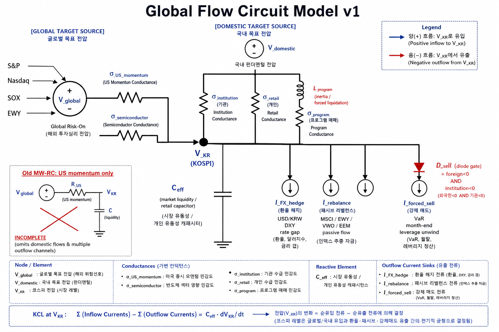
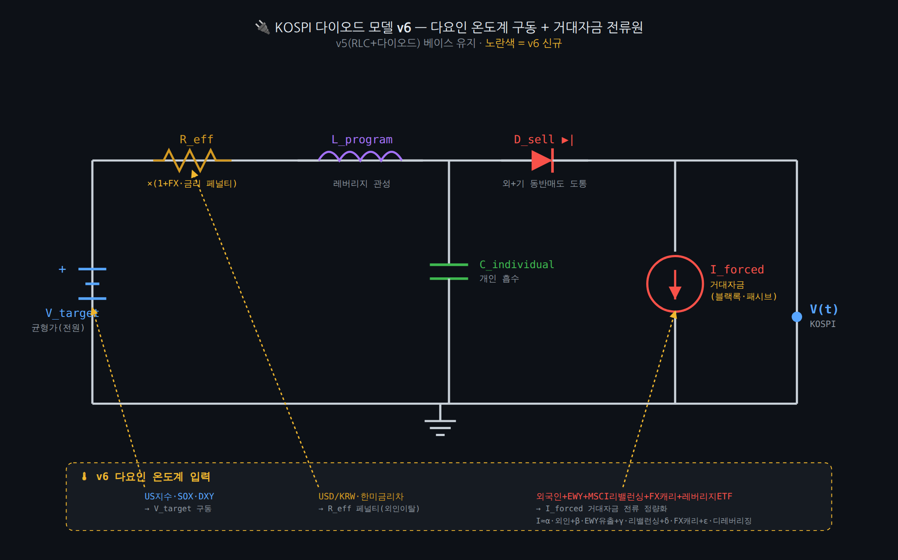

Codex Gate-RC Trimmed v2
처음 Codex 모델을 버리지 않고 파라미터 최적화한 형태다. Diode, MW-RC, naive intraday anchor를 앙상블하고 과열/외국인 매도 조건에서 trim을 건다.
- 핵심: 원형 Gate-RC의 빠른 계산력 유지
- 개선: 6/30 실패 이후 외국인/고점돌파 페널티 추가
- 역할: 아침 7:30 빠른 기준선
처음 Codex 모델을 버리지 않고 파라미터 최적화한 형태다. Diode, MW-RC, naive intraday anchor를 앙상블하고 과열/외국인 매도 조건에서 trim을 건다.
내가 새로 확장한 수정 회로다. 미국장뿐 아니라 FX, 금리, 채권, 뉴스/SNS, 패시브 리밸런싱, 레버리지 청산 전류를 별도 센서로 받는다.
Claude가 v5 구조를 유지하면서 각 소자를 다요인으로 구동하도록 고친 모델이다. 특히 R_eff와 I_forced에 FX/금리/거대자금 프록시를 넣었다.


| 항목 | Codex Gate-RC Trimmed v2 | Codex Global Flow Circuit v1 | Claude Diode/RLC v6 |
|---|---|---|---|
| 기본 철학 | 원형 모델을 빠르게 최적화한다. 데이터가 적을 때도 안정적으로 돌릴 수 있어야 한다. | 시장을 여러 센서가 연결된 전기회로로 보고, 외부 충격과 자금 흐름을 분리한다. | RLC+다이오드 구조를 유지하되, 과열 구간을 다요인 온도계로 잘라낸다. |
| 전원 V | 미국장, SOXX, 선물, 전일 KOSPI 기준선 | 미국장, SOX, DXY, USD/KRW, 금리, 채권, 뉴스/SNS 감성 | US지수, SOX, DXY로 V_target 구동 |
| 저항 R | 복원/평균회귀 저항. 외국인 매도와 고점돌파 때 trim으로 보정 | FX carry, 한미금리차, 환율 스트레스가 R_eff를 키움 | USD/KRW와 한미금리차 페널티를 R_eff에 직접 반영 |
| 전류원 I | 외국인/기관 수급을 사후 trim 신호로 사용 | BlackRock류 패시브, EWY, MSCI 리밸런싱, 레버리지 ETF 청산을 강제 전류로 근사 | I_forced = α·외인 + β·EWY유출 + γ·MSCI + δ·FX캐리 + ε·디레버리징 |
| 강점 | 빠름, 토큰 적음, 원형 모델의 파라미터 학습이 쉬움 | 설명력이 높고 미국장 외의 변수까지 흡수 가능 | 6/30처럼 미국 강세와 국내 수급 약세가 충돌하는 날 방어적 |
| 약점 | 센서가 적으면 미국 모멘텀을 과대 외삽할 수 있음 | 데이터 소스가 많아 결측/노이즈 관리가 필요 | 강한 추세장에서 너무 빨리 눌러 과소예측할 위험 |
Forecast = .50·Diode + .30·MWRC + .20·Naive - Trim
Trim = base + foreign_penalty + breach_penalty + fade
원형 모델의 차별점은 속도다. GPU/NPU를 쓰기보다 CPU에서 빠르게 산출하고, 필요한 경우 GLM/Gemini 검증층만 얹는다.
dV/dt = (V_target - V)/R_eff + I_forced - I_news - I_deleveraging
R_eff = R0·(1 + FX + rate_gap + volatility)
미국 주식시장 밖의 변수, 즉 환율·금리·채권·뉴스·SNS·패시브 자금을 회로 소자로 분해한다.
V_target = f(US, SOX, DXY)
I_forced ≈ α·외인 + β·EWY + γ·MSCI + δ·FX캐리 + ε·ETF디레버리징
Claude의 차별점은 과열 방어다. US 강세가 들어와도 FX/금리/외국인 매도 조건이 나쁘면 회복 저항을 키운다.
| 모델 | 현재 상태 | 다음 개선 |
|---|---|---|
| Codex Gate-RC Trimmed v2 | 6/30 장중 학습 원장 기준 보수 추천값 저장. w_diode=.50, w_mwrc=.30, w_naive=.20. |
3개월 백테스트 데이터로 regime별 가중치 분리. 상승추세/월말/환율급등/외인매도 regime을 별도 학습. |
| Codex Global Flow Circuit v1 | 구조 설계 완료. 환율, DXY, US10Y, forced outflow risk는 예측 스크립트에 1차 반영. | EWY flow, MSCI 리밸런싱 캘린더, ETF 디레버리징 proxy, 뉴스/SNS sentiment를 실데이터로 연결. |
| Claude Diode/RLC v6 | Claude 설명과 회로도를 문서화. 6/30 승리 요인은 과열 trim과 외국인 매도 해석. | 상대 모델로 계속 재현한다. 강한 추세장에서 보수 trim이 언제 손실이 되는지 역검증. |
| 관찰 | 의미 | 모델 반영 |
|---|---|---|
| 미국장 강세를 그대로 외삽하면 종가가 과대평가됐다. | US momentum은 전원이지 최종 출력이 아니다. | Gate-RC에는 trim, Global Flow에는 R_eff와 I_forced를 넣는다. |
| 외국인 월말 매도와 환율 부담이 상승분을 눌렀다. | 국내 수급은 회로의 누설 전류 또는 역방향 전류다. | 외국인/기관/프로그램 수급을 단순 후행값이 아니라 전류원으로 본다. |
| Claude는 보수적 trim으로 이겼다. | 다만 이 전술은 추세장이 강하면 과소예측 위험이 있다. | Claude v6는 방어 기준선, Codex v2/v1은 빠른 기준선과 확장 센서로 운용한다. |